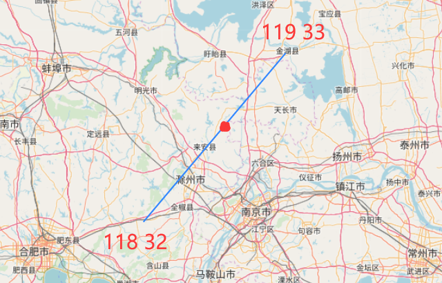
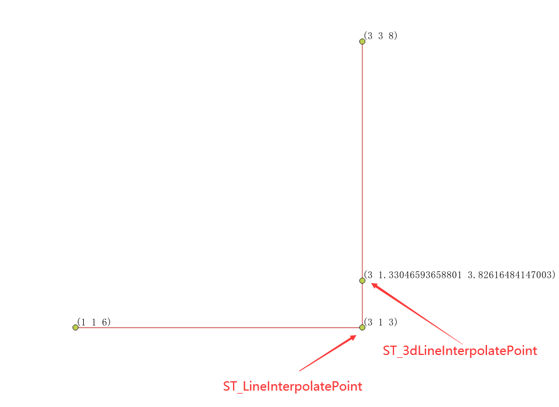
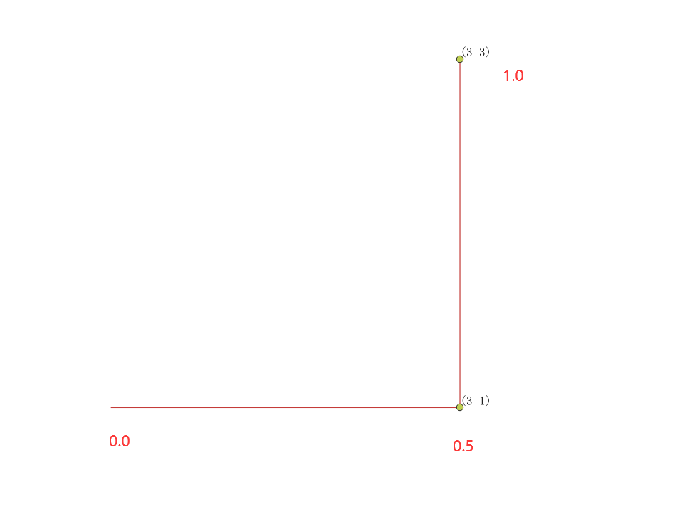

ST_LineInterpolatePoint
方法功能描述
根据百分比返回单义线上任意点的位置。
函数定义
geometry ST_LineInterpolatePoint(geometry a_linestring, float8 a_fraction);
入参：
a_linestring：一条线，必须是LineString类型，不支持MultiLineString；
a_fraction：百分比，0-1之间的一个小数。
返回值：
一个点图形对象。
应用示例

返回线的中点位置：
--中点对应的百分比是0.5，起点对应0，终点对应1
SELECT ST_AsText(ST_LineInterpolatePoint(the_line, 0.50))
FROM (SELECT ST_GeomFromText('LINESTRING(118 32,119 33)') as the_line) As foo;
st_astext
-------------------
POINT(118.5 32.5)
(1 行记录)
返回线的起点位置：
SELECT ST_AsText(ST_LineInterpolatePoint(the_line, 0))
FROM (SELECT ST_GeomFromText('LINESTRING(118 32,119 33)') as the_line) As foo;
st_astext
-------------------
POINT(118 32)
(1 行记录)
返回线的终点位置：
SELECT ST_AsText(ST_LineInterpolatePoint(the_line, 1))
FROM (SELECT ST_GeomFromText('LINESTRING(118 32,119 33)') as the_line) As foo;
st_astext
-------------------
POINT(119 33)
(1 行记录)
多维应用
ST_LineInterpolatePoint函数能部分满足多维应用，PostGIS中常用的有 经度纬度高程(lon,lat,z)这样的三维数据，还有 经度纬度测量值(lon,lat,m)这样的测量值坐标。分别举例如下：
--带高程z
SELECT ST_AsText(ST_LineInterpolatePoint(the_line, 0.5))
FROM (SELECT ST_GeomFromText('LINESTRINGZ(1 1 6, 3 1 3, 3 3 8)') as the_line) As foo;
st_astext
-------------------
POINT Z(3 1 3)
(1 行记录)
--带测量值m
SELECT ST_AsText(ST_LineInterpolatePoint(the_line, 0.5))
FROM (SELECT ST_GeomFromText('LINESTRINGM(1 1 6, 3 1 3, 3 3 8)') as the_line) As foo;
st_astext
-------------------
POINT M(3 1 3)
(1 行记录)
--既有高程z，也有测量值m
SELECT ST_AsText(ST_LineInterpolatePoint(the_line, 0.5))
FROM (SELECT ST_GeomFromText('LINESTRINGZM(1 1 6 8, 3 1 3 6, 3 3 8 7)') as the_line) As foo;
st_astext
-------------------
POINT M(3 1 3 6)
(1 行记录)
现象：ST_LineInterpolatePoint只是根据经纬度和百分比算位置的，无论后面z还和m是什么值对于平面的中点位置其实没有任何影响。计算出实际位置后，才插值计算该点对应的z，m值。
说明：位置点的计算，与高程z毫无关系，其实等于说明，不支持真实的带高程z的三维图形计算，三维中的位置点计算另有函数实现。
ST_3dLineInterpolatePoint
该函数使用与ST_LineInterpolatePoint一模一样，但是支持三维高程数据，下面举几个案例说明：
- 高程z计算
SELECT ST_AsText(ST_3dLineInterpolatePoint(the_line, 0.5))FROM (SELECT ST_GeomFromText('LINESTRINGZ(1 1 6, 3 1 3, 3 3 8)') as the_line) As foo;
st_astext
-----------------------------------------------
POINT Z (3 1.33046593658801 3.82616484147003)
(1 行记录)
说明：计算结果不同于ST_LineInterpolatePoint，ST_3dLineInterpolatePoint计算结果已经考虑了三维z值对位置的影响。

- 测量值m计算
SELECT ST_AsText(ST_3dLineInterpolatePoint(the_line, 0.5))FROM (SELECT ST_GeomFromText('LINESTRINGM(1 1 6, 3 1 3, 3 3 8)') as the_line) As foo;
st_astext
-----------------------------------------------
POINT M(3 1 3)
(1 行记录)
说明：线型为LINESTRINGM，没有申明z值，此为特殊情况，可以理解成线上的点的z值都是同一个默认值z（比如0），那么在默认值z的维度下（降维打击？？？），这个线其实是个标准的平面二维数据，所以ST_3dLineInterpolatePoint与ST_LineInterpolatePoint结果一致。
例如，当z值相同，可以看成在该维度下是二维的，位置点经纬度结果与二维是一致：
SELECT ST_AsText(ST_3dLineInterpolatePoint(the_line, 0.5))FROM (SELECT ST_GeomFromText('LINESTRINGZ(1 1 6, 3 1 6, 3 3 6)') as the_line) As foo;
st_astext
-----------------------------------------------
POINT M(3 1 6)
(1 行记录)
- 高程z与测量值m计算
SELECT ST_AsText(ST_3dLineInterpolatePoint(the_line, 0.5))FROM (SELECT ST_GeomFromText('LINESTRINGZM(1 1 6 5, 3 1 3 4, 3 3 8 9)') as the_line) As foo;
st_astext
-----------------------------------------------
POINT ZM (3 1.33046593658801 3.82616484147003 4.82616484147003)
(1 行记录)
说明：ST_3dLineInterpolatePoint函数根据经纬度和高程z计算出三维点位置，再根据点位置反向插值计算m值。
总结：
- ST_LineInterpolatePoint位置点由经纬度参与计算，高程z与测量m值不参与计算。位置点确定后，反向插值计算z，m，仅适合二维。
- ST_3dLineInterpolatePoint位置点有经纬度和高程z参与计算，测量值m不参与计算。位置点确定后，反向插值计算m，仅适合三维。
- 测量值m都不参与位置点计算，而是通过已经计算出的位置点，反向插值推导出该点对应的m值。
ST_LineInterpolatePoints
方法功能描述
根据百分比返回单义线上一到多个的任意点的位置。
函数定义
geometry ST_LineInterpolatePoints(geometry a_linestring, float8 a_fraction,boolean repeat);
入参：
a_linestring：一条线，必须是LineString类型，不支持MultiLineString；
a_fraction：百分比，0-1之间的一个小数。
repeat：true可重复，如设置0.1，则从0开始，每0.1间隔采一个点；如设置0.6，即使true也只会有一个点。false时等同与ST_LineInterpolatePoint。
返回值：
一到多个点图形对象。返回多个点时是MultiPoint对象，单个点时是Point对象。
使用示例：
设置fraction=0.5，即每0.5位置获取一个点： 
SELECT ST_AsText(ST_LineInterpolatePoints(the_line, 0.5)) FROM (SELECT ST_GeomFromText('LINESTRING(1 1, 3 1, 3 3)') as the_line) As foo;
st_astext
-----------------------------------------------
MULTIPOINT(3 1,3 3)
(1 行记录)
设置fraction=0.6：
SELECT ST_AsText(ST_LineInterpolatePoints(the_line, 0.6)) FROM (SELECT ST_GeomFromText('LINESTRING(1 1, 3 1, 3 3)') as the_line) As foo;
st_astext
-----------------------------------------------
POINT(3 1.4)
(1 行记录)